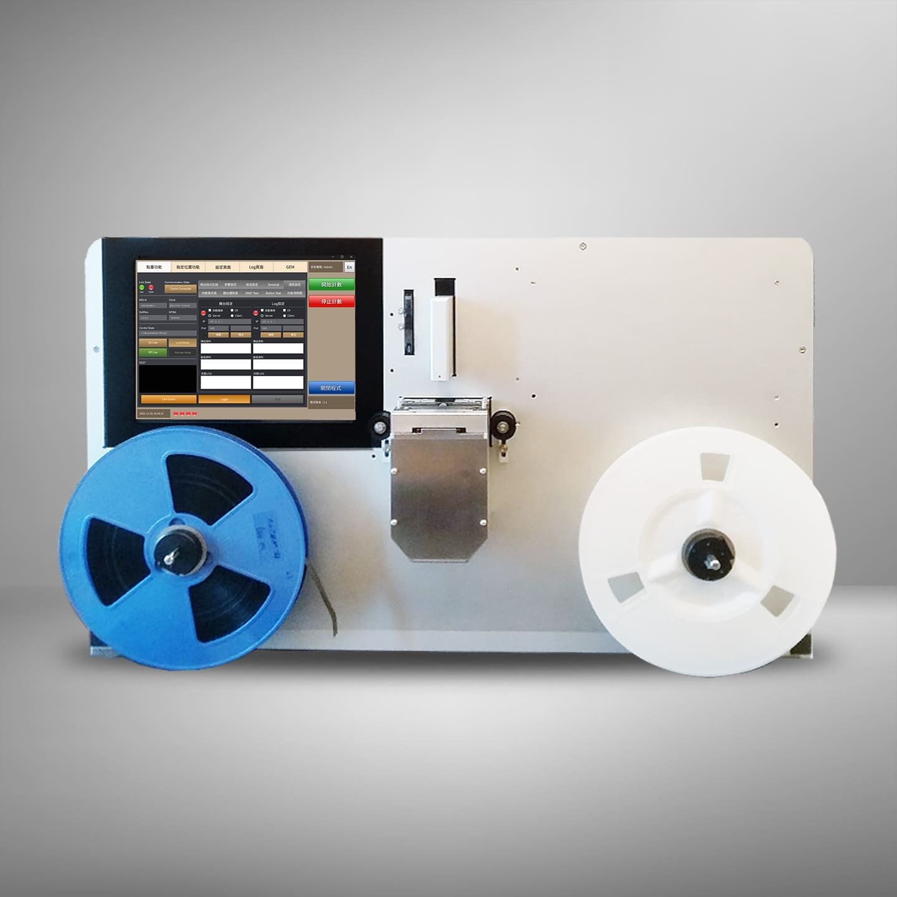
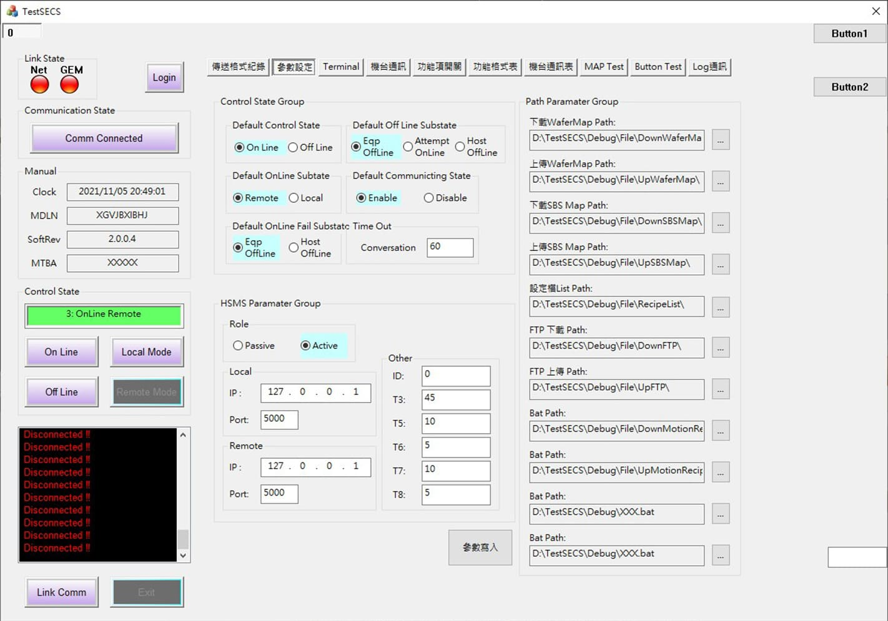
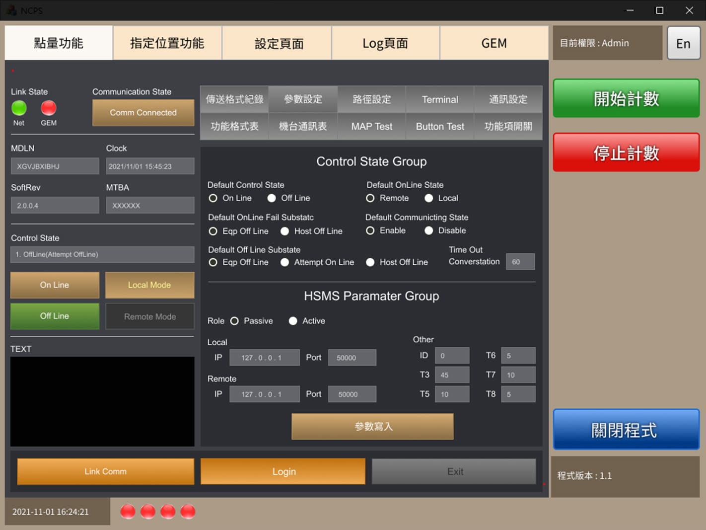
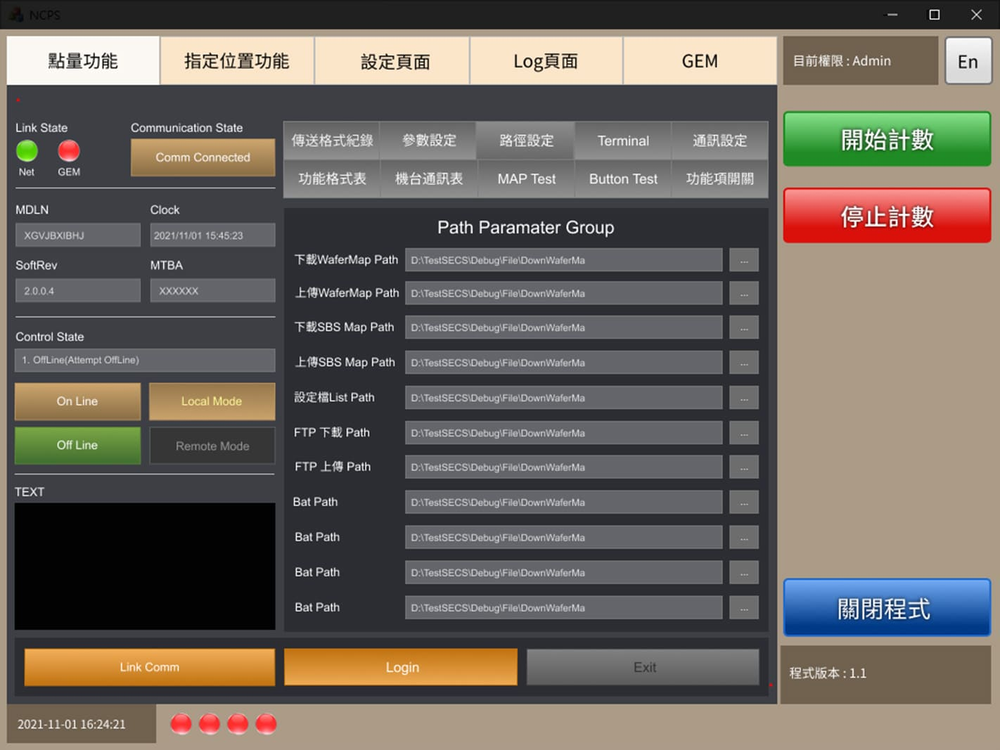
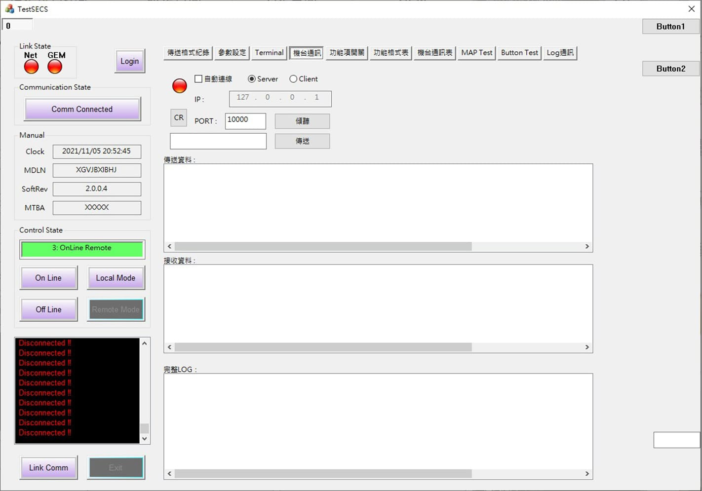
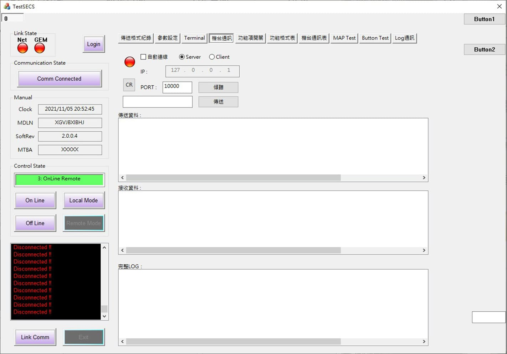
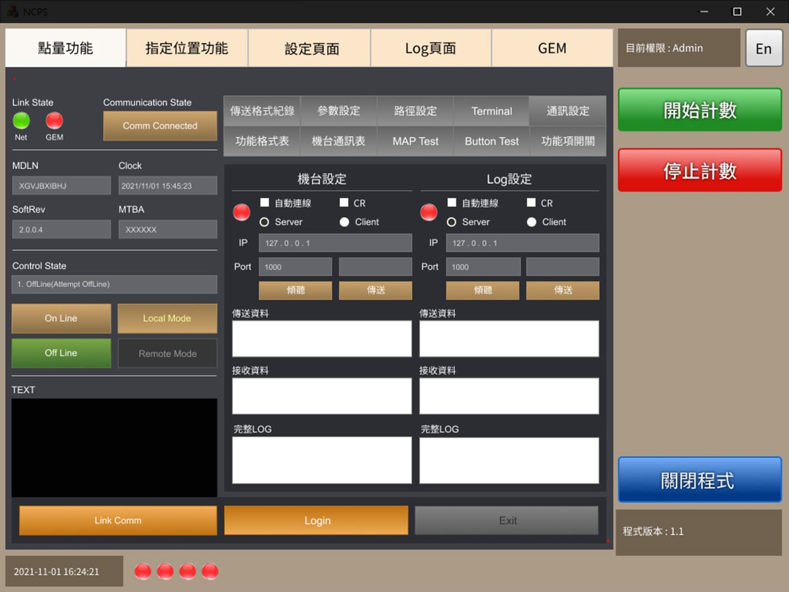

機台介面設計
此系統是用於IC、LED、被動元件等...產品放置捲帶形式的包裝，使用高速對照式光電器來紀錄產品數量及位置。 內建各種模式的點量及指定位置的到達，容易操作簡便，並符合人性化的介面，並隨時監視運作情形及可將結果上拋至客戶雲端系統。
專案時間
2021
專案類型
機台介面
使用工具
Figma
我的角色
UI/UX Designer
主要服務
機台介面設計
專案概況
原先的系統介面是由工程師用程式寫介面，但由於工程師不擅於介面規劃及配色，所以才找設計師合作規劃介面設計及配色；
因為以前沒有接觸過機台的設計，所以需要花了時間跟工程師來回溝通，了解每個功能的作用以及功能之間的關係為何．
專案目標
1. 整合多個功能於介面裡，並讓使用者容易理解各功能如何使用。
2. 將功能依重要順序呈現於介面中，使介面與層次更淺顯易懂。
3. 使用不同的顏色，顯示該功能的作用，例如：紅色表示停止，綠色代表開始．
機台介面設計

優化設計重點介紹
顏色與文字欄位在觸控面板不易閱讀操作，功能設計為多種按鈕，沒有使用顏色做功能與種類的區分，優化重點為視覺感受、資訊分類與資訊層級設定。
參數設定
沒有選用顏色做配色規劃，文字欄位配置過於擁擠，手指不容易做觸控設定。
Before
After
背景顏色使用深色，讓文字欄位能清楚閱讀，讓使用者容易操作觸控面板．
將參數設定及路徑設定功能分開．使用tab bar讓使用者能夠一目瞭然並能快速切換．
通訊設定
沒有選用顏色做配色規劃，欄位配置不協調，訊息欄位空間過大。
Before
 

After
將機台設定及log設定整合在同一個介面裡
